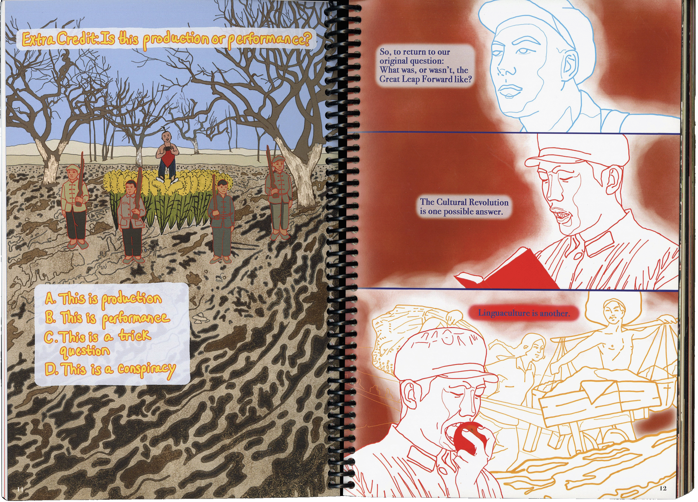
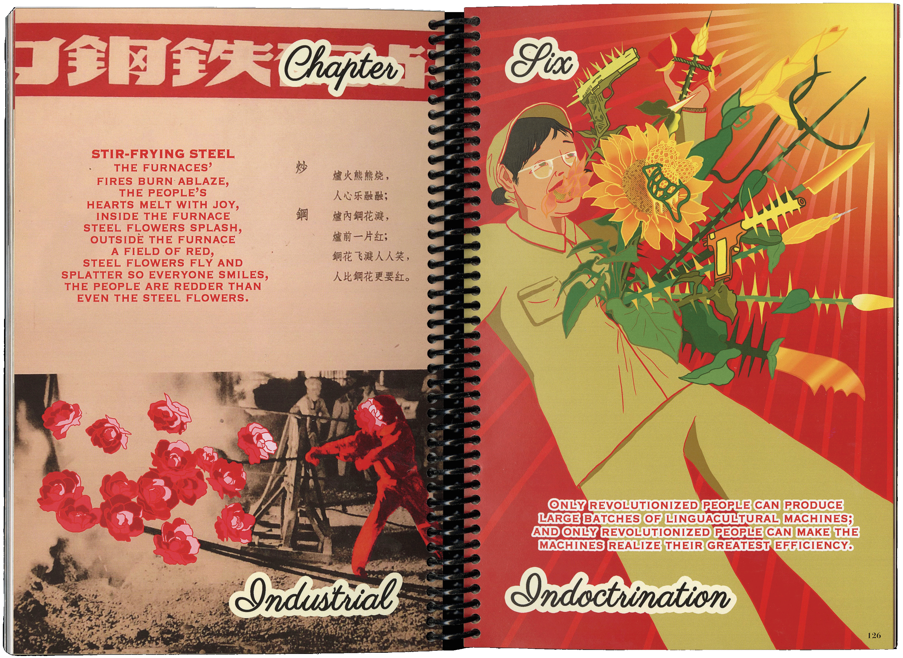
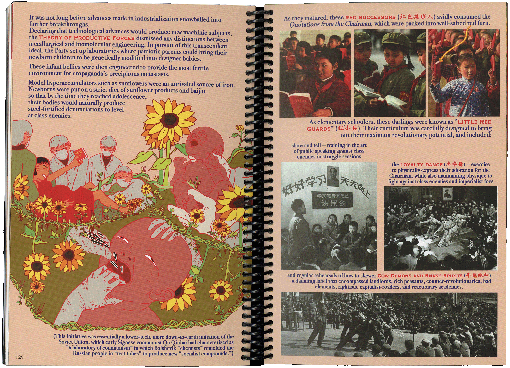
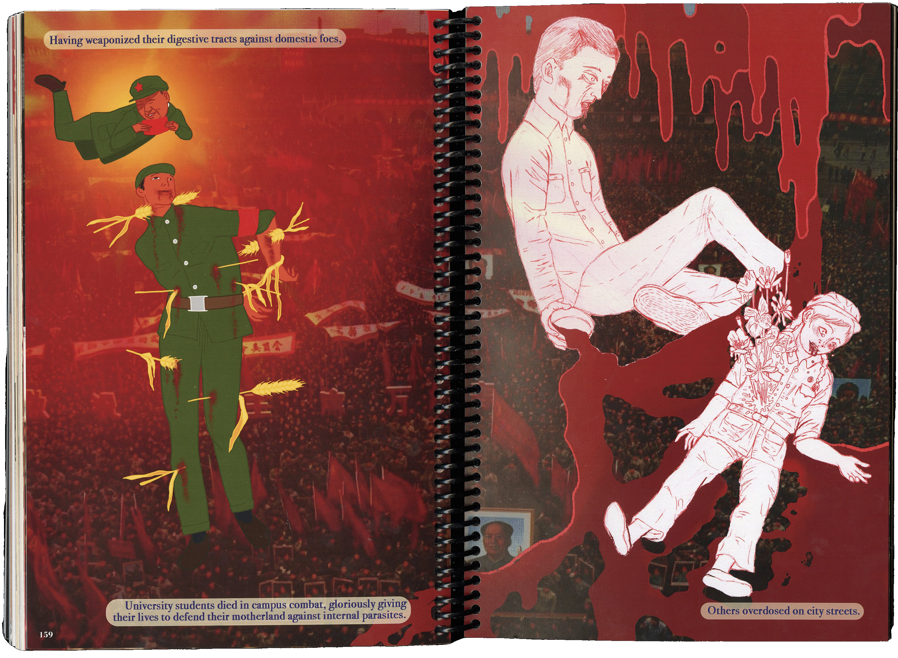
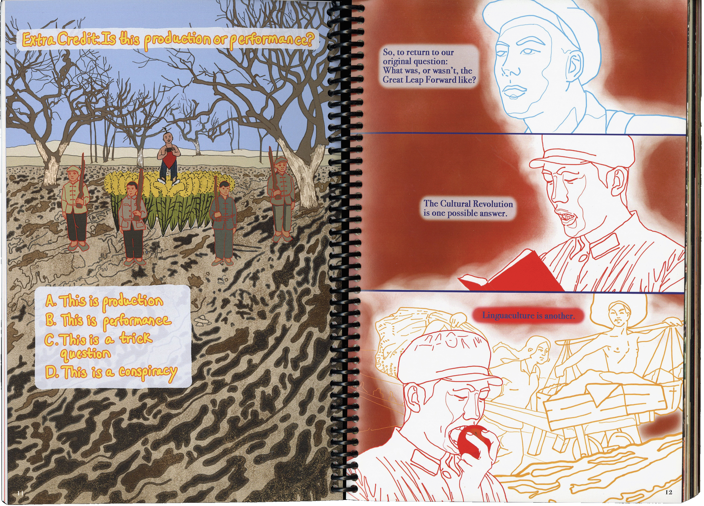
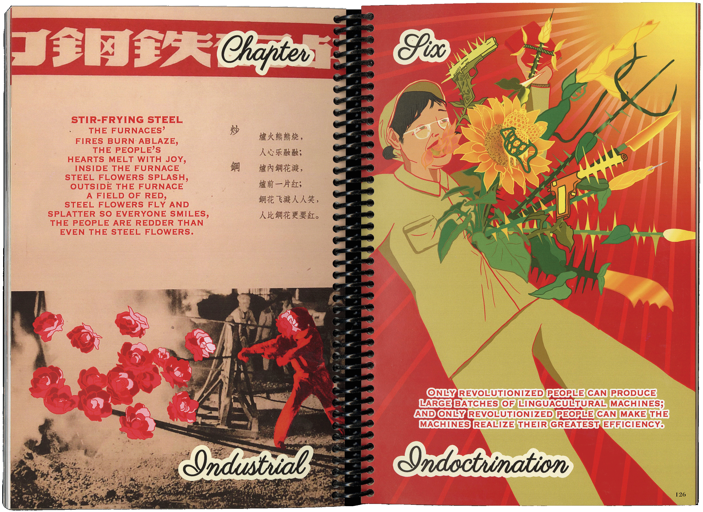
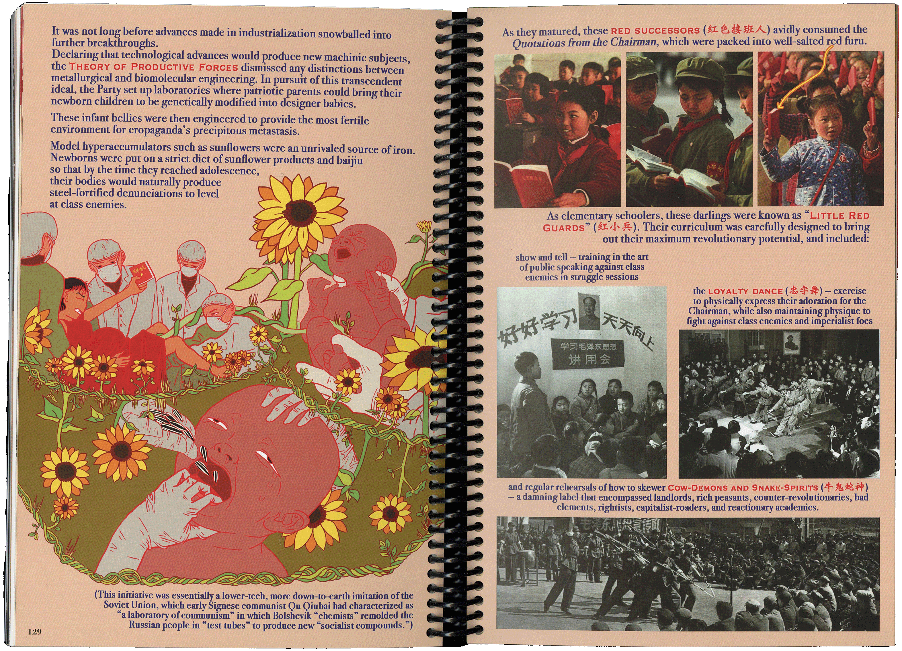
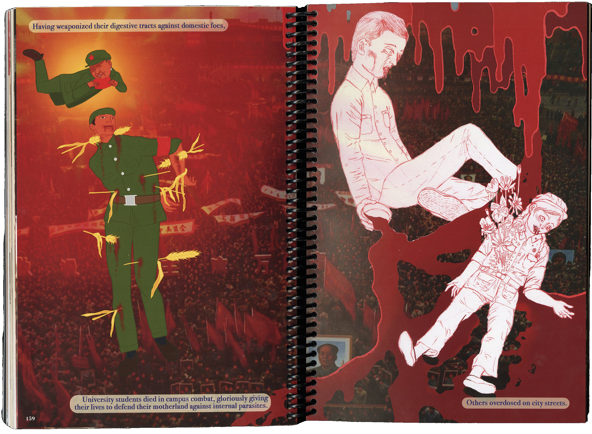

ZÀO: A History of Chinese Dishcourse through Famine and Revolutionbook
A bilingual work of “faction” (fact and fiction), ZÀO: A History of Chinese Dishcourse through Famine and Revolution retells modern Chinese history. Speculative, cross-cultural, and intergenerational, ZÀO satirically reconstructs China’s Mao Era, which saw human history’s worst recorded famine (17-55 million unnatural deaths) and decades of pervasive propaganda. To resist the ongoing amnesia, ignorance, and censorship surrounding these disasters, ZÀO deploys myriad strategies to exhume the massive historical trauma concealed beneath exuberant propaganda: personal and intergenerational memoir, fictional storyline, repurposed archival images, bilingual (mis)translation, critical analysis, and hand-drawn illustrations. This project draws heavily from original research I conducted in China, my Chinese-American background, and autobiographical family memories.
 








Further Reading:
For a hefty, statistically-laden scholarly account of the Great Chinese Famine and the Great Leap Forward that instigated/exacerbated it, read: Yang, Jisheng. Tombstone: The Great Chinese Famine, 1958-1962. 1st American ed. Translated by Edward Friedman, Jian Guo, and Stacy Mosher. New York: Farrar, Straus and Giroux, 2012.
For a collection of short, personal stories from the Great Chinese Famine, read: Zhou, Xun. Forgotten Voices of Mao's Great Famine, 1958-1962: An Oral History. New Haven: Yale University Press, 2013.
For an overview and detailed accounts of violence during the Cultural Revolution, visit: this online memorial.
To browse through a gargantuan but well-organized database of propaganda from mid- to late-20th century China, covering but spanning beyond the Great Leap Forward and Cultural Revolution, browse: this online gallery.
For a taste of Mao's Mangoes, read: Murck, Alfreda. “Golden Mangoes: The Life Cycle of a Cultural Revolution Symbol.” Archives of Asian Art 57 (2007): 1-21. http://www.jstor.org/stable/20111345.